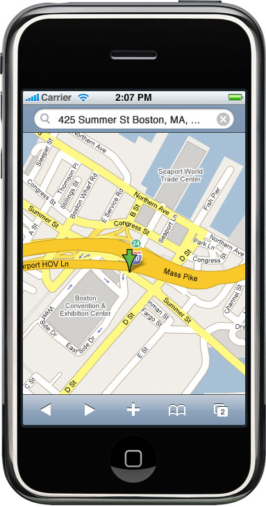
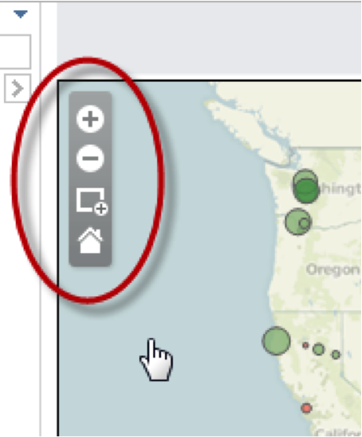
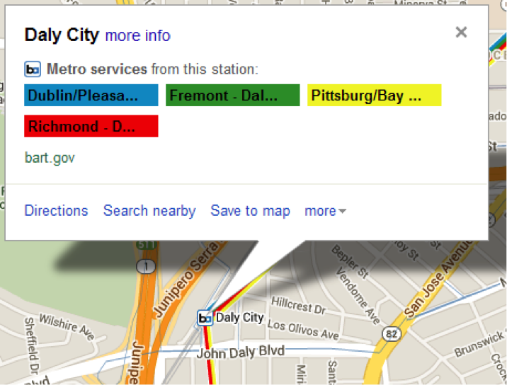
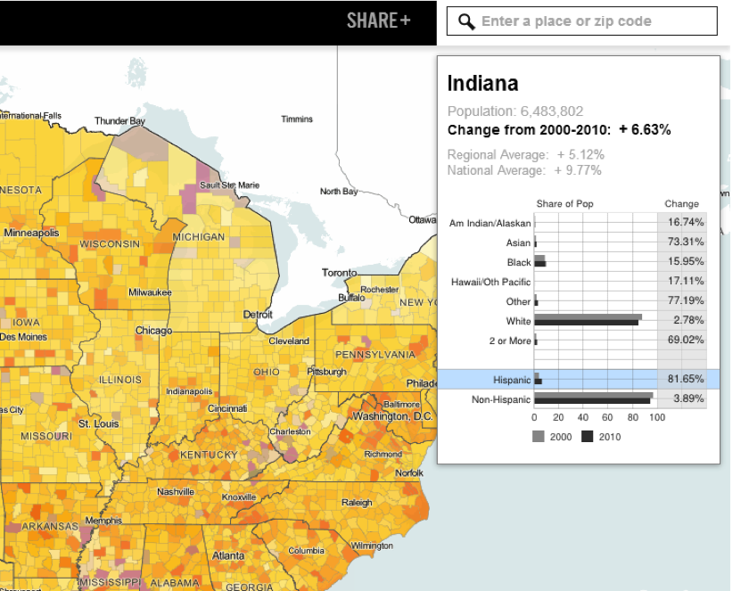
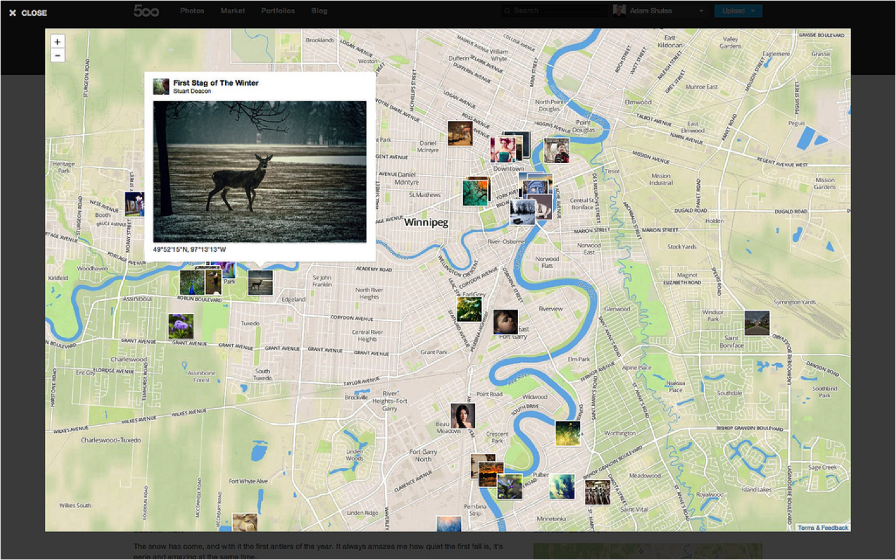
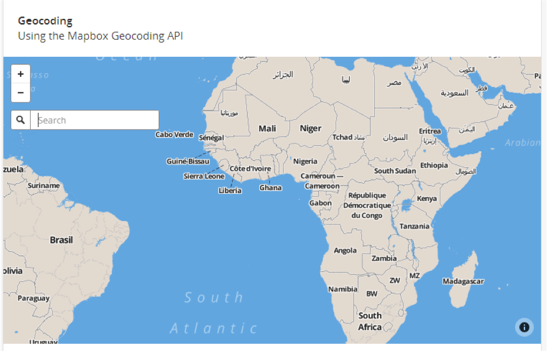
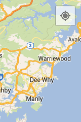

Mapping viz with JavaScript
Wifi: Mapbox Guest // longitudelatitude
To follow along, go to danswick.com/web-map-quickstart/fall2019/class3
AGENDA
- Recap last week's class
- üõ† Mapbox GL JS choropleth code-along
- üó£ Recap how GL rendering works
- üõ† Events code-along
- üó£ Web map interactions
- üõ† Make a new choropleth on your own!
- Wrap up!
Let's recap
homework:
- Do the build a store locator tutorial.
- Keep learning! Try one more of the Web apps tutorials on the Mapbox help page
- Head to the Mapbox GL JS examples page and look under the user interactions section. Describe the types of user interactions you see. What questions do you have while looking at these examples?
- Stretch goal: can you add other kinds of geodata to your map? hint and hint.
- If you weren’t able to add a popup to your custom layer during class, try to do so before next week.
Let's recap
homework:
For your
class journal:
- What are the ways you can identify that a file is a shapefile?
- What is the difference between raster and vector data?
- Why might you choose to add point features to a Mapbox GL JS map as a symbol layer vs Mapbox GL JS’s built-in Marker method?
Mapbox GL JS code-along
Head to
this Google Drive link and download and unzip the file. We're going to start with the bits in the
choropleth folder. Don't look at the solution yet! üôà
Open the file named choropleth.html and follow along with me. We're going to write our code first, then cover questions once we've got a working map.
Step 1: let's fill in all the things we know how to do already.
- Setting the access token
- Sources?
- Layers?
- Style URLs?
- What's that
map.on('load', ...)thing all about?
Talking time: How GL works.
Mapbox GL is a way to render maps with vectors in the browser rather than as images on the server.
Up until now, all rendering has been happening server-side with Mapnik. Vector tiles are combined with CartoCSS styles, fed to Mapnik, and raster tiles are created and served to the browser.
With Mapbox GL, the rendering happens in your browser with the help of your device's graphics processing unit.
This makes map loading hella crazy stupid fast. It also means you can do cool stuff like rotating and tilting the map, smooth/infinite zooming, and more!
So in a practical sense, how does this work?
Because maps are being rendered in the browser (or on a device), we have to give some guidance on what to draw and how to draw it.
The stylesheet contains all the information needed to draw your map, including references to data, fonts, images, and, most importantly, styling rules.
These styling rules are defined in the spec as layers: styled representations of data in your map.
So what does Mapbox Studio do? It is a visual interface for creating GL stylesheets.
Plus it's like, totally intuitive and pretty and easy to use.
Almost everything you do in Mapbox Studio relates directly to something in the Mapbox GL Style Specification -- especially creating and editing layers.
OK that's a
fast crash course in how maps get rendered.
üôã‚Äç‚ôÄÔ∏è Who has questions?
Next up: a brief overview of events. In our next few code adventures, we'll need to use 'em, so let's talk about 'em.
WTF are events and do I have to RSVP?
When you write a script, it is often designed to execute some task, then be done. Example: given a folder full of CSV data, go through each row and combine the house number and street name columns.
Computers are really good at doing repetitive work!
But what if you want to write a program that builds a webpage and responds to its users' actions?
This is where EVENTS come in!
(this is a pretty rich topic and we're going to gloss over it real fast)
The super smart people who design and build web mapping libraries (like Leaflet) know that their end users want to interact with stuff, not just look at a plain ol' static map.
To make that possible, they write their mapping programs to do two things:
- Create and raise events
- Listen for events
You got this!
Creating and raising events is very complex, but the gist is: an event is an object that contains very specific information about what just happened.
Let's go to the dev tools!
Back in your
sample code folder, open
/events/code-along-solution.html
in your browser.
Raising an event means putting it in a place where someone could find it, should they want to.
üö® VOCAB WORD ALERT üö®
in your map travels, you'll almost certainly run into this term and be like, "WTF does this have do do with listening?"
EVENT LISTENER
WTF
An event listener is a function whose job is to sit around and wait for a specific thing to happen, then, when that thing happens, make other stuff happen in response.
I think about it like this:
- Wait for the burglar to walk into the string
- Turn on the fan in front of the pile of feathers
- Wait for the user to click on the map
- Open a popup with some lat/lon info where the user clicked
With this in mind, let's go back to Mapbox GL JS and write some more code.
Go back to the files you downloaded earlier and open /events/code-along.html. This time, let's go around the room. Each time we get to a code comment, the next person in line will describe what code to write. Don't worry about all the nitty gritty details. Just try to describe the concepts and I'll fill in the details.
Let's
recap:
- What are
sources and layers?
- How do these GL maps differ from the old basemap-overlay paradigm we used to see in web maps?
- What are event listeners? Can someone walk us through all of the event listeners in the code we just wrote?
Great work!
Let's dive into our topic for today: interactions!
Spend 5 or so minutes working on your own to familiarize yourself with this map and what it's trying to convey.
Then, work with your partner to see if you can identify all of the types of interaction possible with this map. No interaction is too small!
What did you find? Which types of interaction are critical to the message of the map?
Let's talk interactions!
An important concept for web cartography is "screen real-estate".

- Space is scarce
- Mobile vs. desktop
- Fluid vs. compartmentalized layout
Panning and zooming, which we will talk more about next time, are a way around all of this but.... for some maps it is overkill & potentially a cop-out.
The main thing the web brings to cartography is interactivity, which can take many forms.
In web design and development, people make entire careers out of designing for interactivity.
The field is called UI/UX, which is shorthand for user interface and user experience.
It means you think through how people who visit your site will interact with it, and you design the interface to guide the user toward the experience you want them to have.
UI/UX is a really important component in web mapping.
(Project managers creating government web portals for geospatial data, I am talking to you.)
For this reason, while it makes sense in print cartography to talk about map readers, in web cartography we talk about map users.
Panning and Zooming

Info Boxes

Tooltips
Highlighting
Charts

Embedded images/video

Geocode box

"Zoom to my location" button

Animation
All these whizz-bangs are neato!
But we must use them sparingly, wisely, and with purpose.
What kinds of interactions have we worked with so far today?
For the rest of class, I'd like you to spend some time coding on your own. I'll walk around to help out and you should feel free to work together üëØ‚Äç‚ôÄÔ∏è
Go back to the files you downloaded earlier and open /code on your own/starter.html. Don't peek at the solution until you're ready!
Nice work! We covered a lot of ground and I have some super fun homework for you for next week
Try to complete the following before next class:
- Keep practicing Mapbox GL JS! Poke through the API docs and examples and see if there are other events and interaction types you can experiment with. Can you add a hover interaction to your choropleth map? What else?
- Get some practice with D3! There are some great tutorials out there, but they're mostly for an older version of D3, unfortunately. This one by Scott Murray is the best I've seen for learning D3's concepts, but is a couple of versions behind. This one by GitHub user sgratzl does a nice job covering the basics for the latest version of D3. Try completing both!
For your class journal:
- How has web map rendering changed over the years?
- Why are events a thing?
- What is the basemap-overlay paradigm and how are GL maps different?